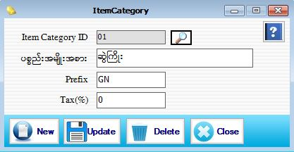

Item Category Setup

- Master Setup အောက်မှ Item Category Form ကိုဖွင့်ပါ။
- ပစ္စည်း အမျိုးအစား သတ်မှတ်နိုင်သော Form ဖြစ်ပါသည်။
- Item Category ID အား Serial အလိုက် Auto တပ်ပေးပါမည်။
- ပစ္စည်း အမျိုးအစား၊ Prefix တို့ကိုဖြည့်စွက်ပါ။ Prefix သည် ပစ္စည်းအမျိုးအစား တစ်ခုချင်းစီအတွက် သတ် မှတ်ထားခြင်းဖြစ်သည်။ ဥပမာ- ပစ္စည်းအမျိုးအစားတွင် လက်ကောက် ဟုထည့်ပြီး Prefix တွင် HC ဟုဖြည့်စွက်ရပါမည်။ Prefix တွင် အများဆုံး Character 3 လုံးသာ ထည့်နိုင်ပါသည်။ Prefix ထည့်ခြင်း သည် Barcode ထုတ်ပါက ပစ္စည်းအမျိုးအစား၏ အတိုကောက်ကို ပေါ်စေချင်၍ ဖြစ်သည်။Tax(%)ရိုက်ထည့်ပါ။
- Data များဖြည့်စွက်ပြီးပါက Save button ကိုနှိပ်ပြီးသိမ်းဆည်းရပါမည်။
- သိမ်းဆည်းပြီးသား Data များအား ပြန်လည်ကြည့်ခြင်း၊ ပြင်ဆင်ခြင်းများပြုလုပ်ချင်ပါက Item Category ID ၏ ဘေးတွင်ရှိသော မှန်ဘီလူး button ကိုနှိပ်ပြီးပြန်လည်ကြည့်ရှုပြင်ဆင်ချင်သော Item Category အားရွေးချယ်ပြီး ပြင်နိုင်ပါသည်။
- သိမ်းဆည်းပြီးသား Data များကို ဖျက်လိုလျှင် မှန်ဘီလူး button အားနှိပ်ပြီးရှာပါ။ ထို့နောက် မိမိဖျက်လိုသော Data ကို Delete Button ကိုနှိပ်၍ ဖျက်နိုင်ပါသည်။
- Item Category အသစ်ထည့်လိုပါက New Button ကိုနှိပ်ပြီး အသစ်ထည့်နိုင်ပါသည်။
- Item Category Form အား အသုံးပြုပြီးပါက Close Button ကိုနှိပ်၍ ပိတ်နိုင်ပါသည်။